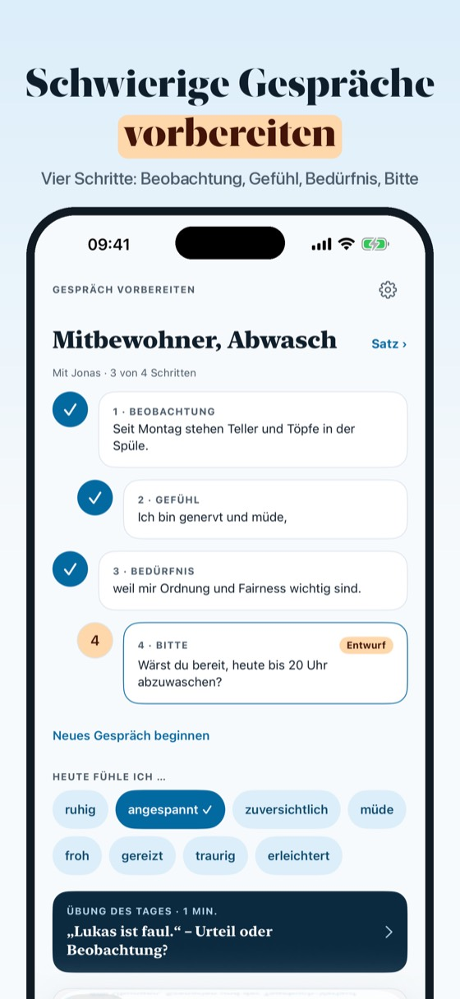
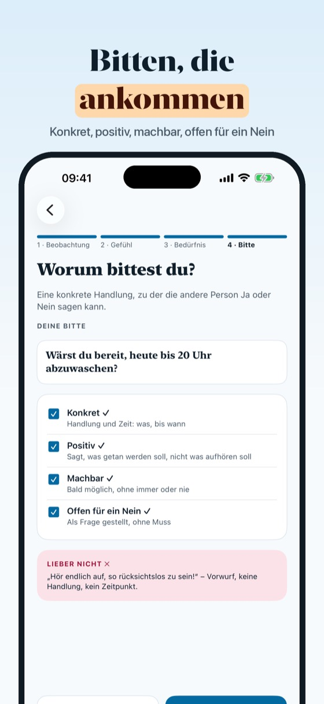
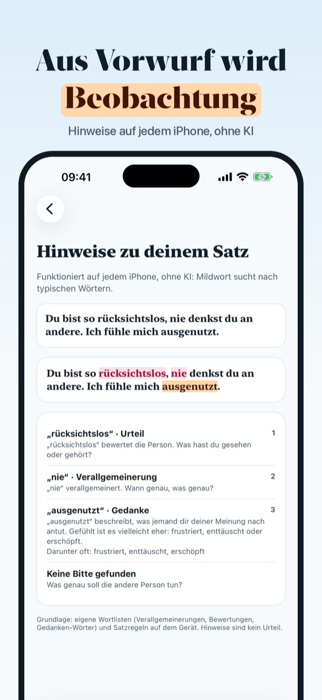
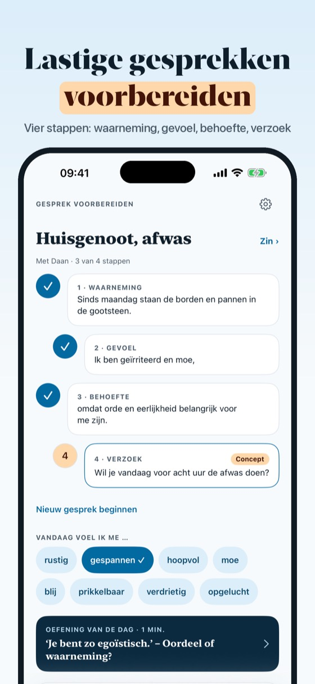
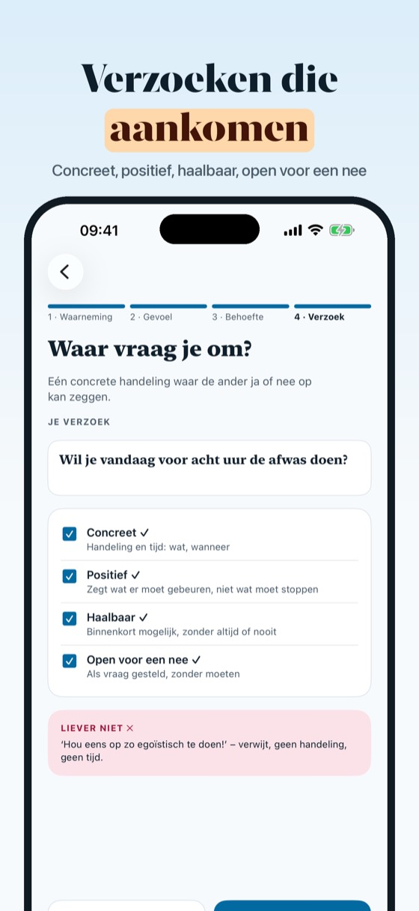
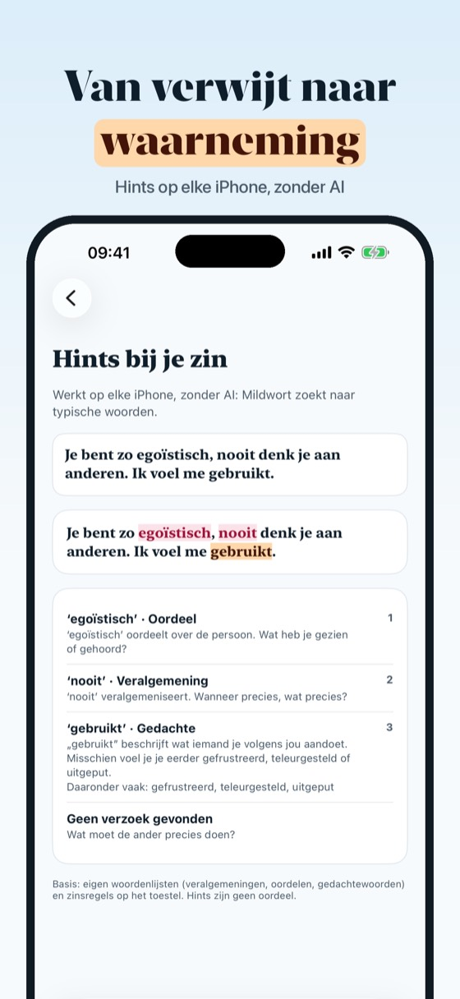

In vier Schritten vorbereiten
Bald im App Store



Mildwort hilft dir, ein schwieriges Gespräch vorzubereiten, bevor du es führst. In vier Schritten schreibst du auf, was passiert ist (Beobachtung), wie es dir damit geht (Gefühl), was dir wichtig ist (Bedürfnis) und worum du bittest (Bitte). Am Ende steht ein Satz, der nach dir klingt und den du vorher laut üben kannst. Kurze Übungen zeigen dir den Unterschied zwischen Urteil und Beobachtung, Szenarien aus Familie, Partnerschaft, Arbeit und Schule geben Beispiele, und dein Tagebuch hält fest, wie Gespräche gelaufen sind.
Der Vier-Schritte-Assistent, die Grundliste der Gefühle und Bedürfnisse, der tägliche Check-in, Hinweise, 10 Übungen und 3 Szenarien gehen ohne Kauf. Mildwort Plus ist ein Einmalkauf: alle 60 Übungen, 40 Szenarien mit Empathiekarten, der ganze Tagebuch-Verlauf und Satzvorschläge auf unterstützten Geräten. Kein Abo.
Mildwort ist ein Übungsheft für Gespräche und ersetzt keine Beratung oder Therapie. Alle Wortlisten, Übungen und Szenarien sind eigene Texte; das Modell der vier Schritte ist allgemein bekannt. Mildwort steht in keiner Verbindung zu Verbänden oder Verlagen.
Übungsheft für Gespräche, keine Therapie. In einer akuten Notlage: Notruf 112.
Voorbereiden in vier stappen
Binnenkort in de App Store



Mildwort helpt je een lastig gesprek voor te bereiden voordat je het voert. In vier stappen schrijf je op wat er gebeurde (waarneming), hoe je je daarbij voelt (gevoel), wat belangrijk voor je is (behoefte) en waar je om vraagt (verzoek). Zo ontstaat een zin die bij jou past en die je eerst hardop kunt oefenen. Korte oefeningen laten het verschil zien tussen oordeel en waarneming, situaties uit gezin, relatie, werk en school geven voorbeelden, en je dagboek houdt bij hoe gesprekken zijn gegaan.
De vierstappenassistent, de basislijst met gevoelens en behoeften, de dagelijkse check-in, hints, 10 oefeningen en 3 situaties werken zonder aankoop. Mildwort Plus is een eenmalige aankoop: alle 60 oefeningen, 40 situaties met empathiekaarten, je volledige dagboekgeschiedenis en zinsuggesties op ondersteunde toestellen. Geen abonnement.
Mildwort is een oefenboek voor gesprekken en vervangt geen hulpverlening of therapie. Alle woordenlijsten, oefeningen en situaties zijn eigen teksten; het model van de vier stappen is algemeen bekend. Mildwort is niet verbonden aan verenigingen of uitgevers.
Oefenboek voor gesprekken, geen therapie. In acute nood: bel 112.